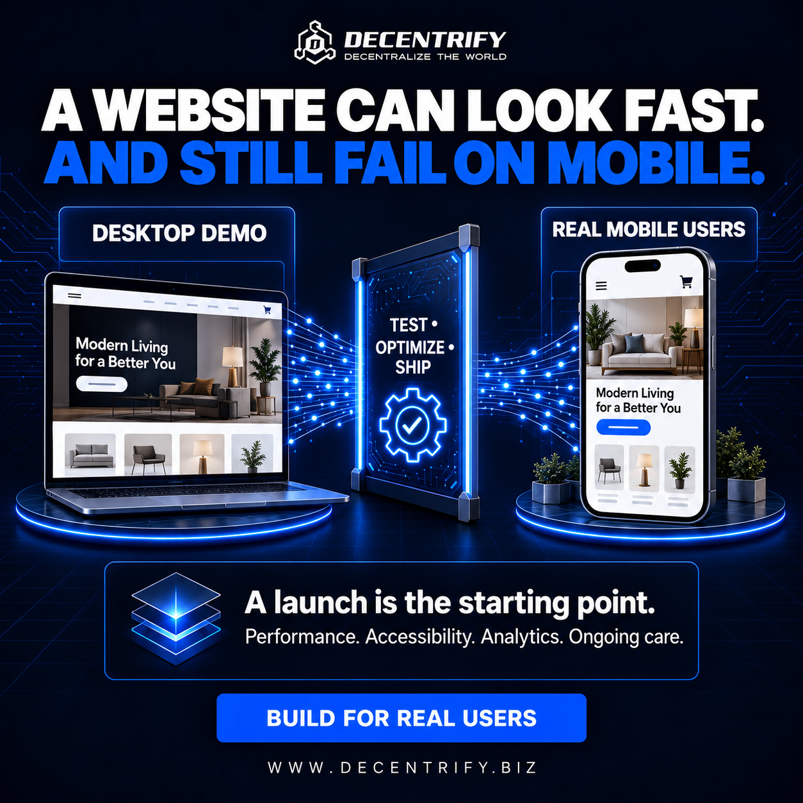

/01
Design & creative
Make your first impression count.
Identity, art direction, and creative that feels like your business.
01.01
Project
Brand Kit
$500
per project
For an existing brand.
Explore the service +
Logo vectorization; print-ready assets; merchandise mockups; brand guidelines; typeface selection and licensing.
What this does for your brand
A consistent identity removes the guesswork from everyday marketing. Your team and suppliers get a usable system for applying the brand across digital and print, so new assets feel connected instead of assembled from scratch.
The impact is practical: fewer mismatched materials, a clearer first impression, and less time spent correcting files. Agree on the core touchpoints and approval process before measuring the change.
The business case
-
Illustrative scenario
$3,600 in annual production capacity
If consistent templates save 6 hours a month at $50/hour, that frees $3,600 worth of team time over 12 months.
-
Illustrative scenario
25% less revision time
Reducing revisions from 8 to 6 hours per campaign saves 2 hours; across 12 campaigns, that is 24 hours a year.
-
Cost of inaction · scenario
$2,400 in avoidable rework
If mismatched brand files create 4 hours of corrections a month at $50/hour, the annual labor cost is $2,400.
Performance metrics to track
KPIs / measurement framework
-
Brand consistency
% of audited assets following the approved guidelines.
Increase consistency
-
Asset turnaround
Median hours from brief to approved asset.
Reduce production time
-
Revision load
Average revision rounds per creative deliverable.
Reduce avoidable rework
Measurement indicators, not claimed results or guaranteed improvements. Baselines, targets, data sources, and reporting periods are agreed for your project.
Discuss this service
01.02
Project
Full Brand Conceptualization
From $1,000
per project
Start with the idea. Build the identity.
Explore the service +
Brand development from inception, including the logo, visual direction, and everything in the Brand Kit.
What this does for your brand
Brand conceptualization gives a new business a coherent starting point: a visual direction, logo, typography, and application system aligned with its positioning. It helps a brand communicate who it is before the audience reads every word.
The goal is a recognizable identity that can carry across campaigns and customer touchpoints. Validate the direction with the intended audience and use a consistent survey method when comparing results.
The business case
-
Illustrative scenario
$10,000 in additional annual revenue
If clearer positioning helps close 5 extra $2,000 projects over a year, gross revenue increases by $10,000.
-
Illustrative scenario
$6,000 from a 5% price premium
If a business sustains a $5 price increase across 100 monthly sales of a $100 product, annual gross revenue rises by $6,000, assuming volume holds.
-
Cost of inaction · scenario
$4,800 in duplicated creative effort
Recreating brand decisions for 8 hours each month at $50/hour consumes $4,800 in annual labor capacity.
Performance metrics to track
KPIs / measurement framework
-
Brand recall
% of surveyed target customers who recall the brand unaided.
Improve recognition
-
Message clarity
% of test participants who correctly identify the brand’s offer.
Clarify the proposition
-
Cross-channel consistency
% of priority touchpoints using the approved identity.
Strengthen cohesion
Measurement indicators, not claimed results or guaranteed improvements. Baselines, targets, data sources, and reporting periods are agreed for your project.
Discuss this service
01.03
Project
Advertising & Media Assets
From $100
4–5 static assets
Creative and copy, together.
12-asset package · $250
Explore the service +
12 static assets: $250. Every asset includes accompanying copywriting. Some static assets may be replaced with video by agreement; formats and substitutions are confirmed in scope.
What this does for your brand
Creative production turns a campaign idea into a usable set of visuals and copy. A coordinated asset set gives you room to test messages, formats, and hooks without making every placement look like a different brand.
Use the assets within a defined campaign and compare like-for-like audiences, placements, and spend. Stronger creative can improve attention and relevance; paid performance also depends on targeting, the offer, and the destination page.
The business case
-
Illustrative scenario
25% more clicks on the same impressions
Moving click-through rate from 1.0% to 1.25% on 100,000 impressions produces 250 extra clicks; conversions still depend on the offer and page.
-
Illustrative scenario
$6,000 in annual media headroom
If cost per acquisition falls from $50 to $40 while delivering 50 customers a month, ad-spend savings total $6,000 a year.
-
Cost of inaction · scenario
$1,200 spent without a sale
An extra 1,000 paid clicks at $1.20 each that fail to convert consume $1,200 in media budget.
Performance metrics to track
KPIs / measurement framework
-
Click-through rate
Link clicks ÷ impressions × 100.
Improve qualified attention
-
Cost per click
Advertising spend ÷ link clicks.
Improve traffic efficiency
-
Creative conversion rate
Attributed conversions ÷ clicks × 100, using a fixed attribution window.
Test message-to-offer fit
Measurement indicators, not claimed results or guaranteed improvements. Baselines, targets, data sources, and reporting periods are agreed for your project.
Discuss this service
01.04
Project
Web Design
$500
per project
The visual direction for your next website.
Included with full-stack production & deployment
Explore the service +
Website visual design and layout. Included at no additional charge when booked with full-stack production and deployment.
What this does for your brand
Web design organizes the story, visual hierarchy, and visitor journey before development. It establishes how information, imagery, and calls to action work together on desktop and mobile.
A useful design helps visitors understand the offer and take the next step with less friction. Test a prototype with representative users; separate prototype usability findings from the live site’s eventual commercial results.
The business case
-
Research benchmark
Up to 35% conversion opportunity
Baymard’s 2025 research estimates this potential for an average large e-commerce site improving checkout design—not a general website redesign guarantee.
Source: Baymard Institute · 2025
-
Illustrative scenario
$12,000 more annual sales
At 1,000 monthly visits and a $100 order value, improving purchase conversion from 2% to 3% adds 10 orders a month: $12,000 annualized.
-
Cost of inaction · scenario
$6,000 in missed annual bookings
If a confusing interface loses 5 otherwise attainable $100 bookings each month, the annual gross booking opportunity is $6,000.
Performance metrics to track
KPIs / measurement framework
-
Task completion
% of usability-test participants who complete the intended task.
Improve usability
-
Time on task
Median seconds to complete a defined task in the prototype.
Reduce friction
-
CTA discoverability
% of test participants who find the primary action without help.
Make the next step clear
Measurement indicators, not claimed results or guaranteed improvements. Baselines, targets, data sources, and reporting periods are agreed for your project.
Discuss this service
RELATED WORK
Explore the experience
Selected portfolio work for visual reference. Project scope and service packages vary.
/02
Website development
A website with a job to do.
From focused landing pages to full-stack progressive web applications.
02.01
Project
Landing Page
$600
per project
One page. One focused journey.
Explore the service +
A focused single-page website for a business, offer, or campaign.
What this does for your brand
A landing page focuses the visitor on one business, offer, or campaign. The content sequence makes the value proposition clear, answers the main objections, and connects the call to action to a specific goal.
That focus makes it easier to see where visitors hesitate and what needs refinement. Define a meaningful conversion before launch and distinguish qualified enquiries from raw form submissions.
The business case
-
Research benchmark
6.6% median landing-page conversion
Unbounce’s 2024 dataset reports this median across industries. It includes different conversion goals and is context, not a sales-conversion target.
Source: Unbounce · 2024 report
-
Illustrative scenario
50% more leads from existing traffic
At 1,000 monthly visits, moving enquiry conversion from 2% to 3% increases leads from 20 to 30 without adding visits.
-
Cost of inaction · scenario
$12,000 a year left without a booking path
If 500 monthly visitors arriving from a Google Business Profile could convert to bookings at 2%, at $100 each, that is $12,000 in annual gross booking opportunity. The traffic and conversion rate are assumptions.
Performance metrics to track
KPIs / measurement framework
-
Landing-page conversion
Completed primary goals ÷ landing-page sessions × 100.
Improve action rate
-
Cost per qualified lead
Campaign spend ÷ leads meeting agreed qualification criteria.
Improve acquisition efficiency
-
CTA click rate
Primary CTA clicks ÷ landing-page sessions × 100.
Track intent to act
Measurement indicators, not claimed results or guaranteed improvements. Baselines, targets, data sources, and reporting periods are agreed for your project.
Discuss this service
02.02
Project
Multi Page Website
From $1,000
per project
Room to tell the full story.
Explore the service +
A multi-page website structured around your business and services. With SEO and a custom assets package: from $1,500 per project.
What this does for your brand
A multi-page website gives each audience need an appropriate home: services, products, about information, proof, and contact. Clear structure helps people move from a broad introduction to the details that support a decision.
The SEO and custom assets option adds discovery and visual content to the scope. Measure both how people arrive and whether they complete useful journeys; more page views alone do not show business impact.
The business case
-
Research benchmark
8.4% higher retail conversions observed
Deloitte’s 2020 mobile-speed study observed this change alongside a 0.1-second improvement across four speed measures. Results were specific to the study.
Source: Deloitte / Google-commissioned research · 2020
-
Illustrative scenario
$24,000 in annual additional revenue
If service pages generate 10 extra monthly leads, 20% become customers, and each first sale is $1,000, annual gross revenue rises by $24,000.
-
Cost of inaction · scenario
$18,000 in missed yearly enquiries
Losing 5 qualified leads a month, with a 30% close rate and $1,000 sale value, represents $18,000 in annual gross sales opportunity.
Performance metrics to track
KPIs / measurement framework
-
Qualified enquiry rate
Qualified enquiries ÷ website sessions × 100.
Attract useful demand
-
Organic clicks
Clicks from unpaid search in the agreed reporting period.
Track search discovery
-
Journey completion
% of sessions completing a defined multi-step path.
Improve navigation effectiveness
Measurement indicators, not claimed results or guaranteed improvements. Baselines, targets, data sources, and reporting periods are agreed for your project.
Discuss this service
02.03
Project
Light Next.js PWA
$2,500
per project
A focused app experience.
Explore the service +
A multi-page progressive web application with logins, edge functions, and a light database. Suitable for a focused set of app features.
What this does for your brand
A light PWA connects a focused feature set with the convenience of a web application. Logins, edge functions, and a light database support a practical workflow without treating every early-stage requirement as a full product platform.
Its brand value comes from making a recurring task easier to access and use. Agree on the core action, activation criteria, and analytics events so adoption can be measured consistently after release.
The business case
-
Illustrative scenario
$12,000 in annual operating capacity
If a focused app saves 20 staff hours a month valued at $50/hour, annual time value is $12,000 before app and support costs.
-
Illustrative scenario
20% more completed workflows
Improving completion from 50% to 60% across 500 monthly starts produces 50 extra completed tasks each month.
-
Cost of inaction · scenario
$4,800 in repeated admin
Eight hours a month spent re-entering information at $50/hour consumes $4,800 of annual labor capacity.
Performance metrics to track
KPIs / measurement framework
-
Activation rate
New accounts completing the defined first-value action ÷ new accounts × 100.
Deliver value sooner
-
Core task completion
Successful core tasks ÷ initiated core tasks × 100.
Reduce workflow drop-off
-
30-day retention
% of an activated user cohort returning during the defined day-30 window.
Track repeat value
Measurement indicators, not claimed results or guaranteed improvements. Baselines, targets, data sources, and reporting periods are agreed for your project.
Discuss this service
02.04
Project
Full Stack PWA
From $3,500
per project
Built around your business logic.
Explore the service +
A progressive web application using React or Next.js, TSX, and a managed PostgreSQL database. Features, integrations, and deployment requirements determine final scope.
What this does for your brand
A full-stack PWA connects the interface, application logic, and managed data layer around more substantial workflows. The scope is shaped by the user roles, integrations, and business rules the product needs to support.
A connected experience can reduce fragmented processes and create a clearer relationship with customers. Measure a small set of core journeys and operational signals; features alone are not evidence of adoption.
The business case
-
Research benchmark
35% potential checkout conversion uplift
Baymard estimates this opportunity for average large e-commerce sites addressing checkout design. It applies to qualifying commerce flows, not every PWA.
Source: Baymard Institute · 2025
-
Illustrative scenario
$24,000 in annual revenue from repeat use
If 100 additional monthly active customers each make one extra $20 purchase per month, annual gross revenue increases by $24,000.
-
Cost of inaction · scenario
$12,000 in fragmented process costs
Twenty monthly hours of manual reconciliation at $50/hour use $12,000 of labor capacity per year.
Performance metrics to track
KPIs / measurement framework
-
Active-user adoption
Users completing a core action in the period ÷ eligible users × 100.
Track meaningful use
-
Workflow completion
Completed business workflows ÷ started workflows × 100.
Improve reliability of use
-
Application error rate
Failed tracked requests ÷ total tracked requests × 100.
Reduce technical friction
Measurement indicators, not claimed results or guaranteed improvements. Baselines, targets, data sources, and reporting periods are agreed for your project.
Discuss this service
RELATED WORK
Explore the experience
Selected portfolio work for visual reference. Project scope and service packages vary.
/03
Applications & MVPs
From concept to something people use.
Three stages of product development, scoped around what you need to prove and launch.
03.01
Project
Custom Front End
$3,500–$5,000
per project
Make the product tangible.
Explore the service +
Custom front-end buildout with a functional preview link to demonstrate the concept and user experience. Production backend development is scoped separately.
What this does for your brand
A custom front end makes an application concept concrete enough to explore. A functional preview lets stakeholders and prospective users interact with the interface before production backend work is committed.
The value is faster learning: unclear flows and weak assumptions can be identified while they are still relatively easy to change. Results at this stage are prototype findings, not evidence of production revenue or retention.
The business case
-
Illustrative scenario
$4,000 of rework avoided
If prototype testing catches a flow issue that would require 40 hours to rebuild after integration at $100/hour, avoided development work is $4,000.
-
Illustrative scenario
50% fewer failed test tasks
Improving task success from 60% to 80% reduces failures from 40 to 20 per 100 comparable tests.
-
Cost of inaction · scenario
$2,400 spent validating too late
Three untested interface assumptions each requiring 8 hours of later rework at $100/hour add $2,400 in development cost.
Performance metrics to track
KPIs / measurement framework
-
Prototype task success
% of test participants completing a representative flow.
Validate the experience
-
Critical usability issues
Count of unresolved issues that block a core prototype task.
Reduce design risk
-
Concept comprehension
% of participants who can accurately describe the product’s purpose after testing.
Clarify product value
Measurement indicators, not claimed results or guaranteed improvements. Baselines, targets, data sources, and reporting periods are agreed for your project.
Discuss this service
03.02
Project
Full Stack MVP
$7,500–$10,000
per project
Test the core. Learn from real use.
Explore the service +
A full-stack minimum viable product with the agreed technology stack, release documentation, a GitHub repository, and beta-testing functionality. Core workflows and beta acceptance criteria are defined before development.
What this does for your brand
A full-stack MVP brings the core product workflow into a testable release with supporting documentation, a repository, and beta functionality. The goal is to learn whether the essential experience works for the intended users.
Define the beta acceptance criteria and first-value action before development. Use the beta to assess behavior and reliability, then prioritize improvements based on observed friction rather than the size of a feature wishlist.
The business case
-
Illustrative scenario
50% more activated beta users
With 200 beta signups, increasing activation from 40% to 60% yields 120 activated users instead of 80.
-
Illustrative scenario
$15,000 less speculative development
If beta feedback prevents 150 hours of low-value feature work at $100/hour, avoided development spend is $15,000.
-
Cost of inaction · scenario
$6,000 in preventable fixes
If untested workflows cause 60 hours of avoidable rework at $100/hour, development cost increases by $6,000.
Performance metrics to track
KPIs / measurement framework
-
Beta activation
Beta users completing the defined first-value action ÷ enrolled beta users × 100.
Validate early value
-
Core workflow success
Successful attempts at the primary workflow ÷ all attempts × 100.
Verify product usefulness
-
Blocking defects
Unresolved defects preventing agreed beta acceptance criteria.
Improve release readiness
Measurement indicators, not claimed results or guaranteed improvements. Baselines, targets, data sources, and reporting periods are agreed for your project.
Discuss this service
03.03
Project
Complete GTM Ready Application
From $20,000
per project
Prepare for go-to-market release.
Explore the service +
A complete application prepared for go-to-market release, including Apple Developer certificates and code signing, plus Google Play Store authorization requirements as applicable. Product, platforms, integrations, and launch scope are agreed together. Store approval remains subject to each platform’s review.
What this does for your brand
A GTM-ready application brings the agreed product scope together with the technical preparation needed for release on the selected platforms. Signing, developer certificates, and store authorization requirements are handled as applicable to the project.
Launch readiness should be assessed against an agreed checklist, followed by real onboarding and usage data. Store approval is a platform decision, and post-launch growth depends on distribution, product fit, and continued iteration.
The business case
-
Illustrative scenario
$6,000 in annual recurring revenue
Ten additional paying customers retained for 12 months at $50/month represent $6,000 in gross subscription revenue, before churn and costs.
-
Illustrative scenario
40% fewer onboarding drop-offs
Moving onboarding completion from 50% to 70% cuts drop-offs from 50 to 30 per 100 starts.
-
Cost of inaction · scenario
$2,500 per month of launch delay
If 50 customers would otherwise begin paying $50/month at launch, a one-month delay defers $2,500 of gross recurring revenue; actual demand must be validated.
Performance metrics to track
KPIs / measurement framework
-
Launch acceptance
Passed release acceptance criteria ÷ total agreed criteria × 100.
Track readiness
-
Onboarding completion
Users completing onboarding ÷ users starting onboarding × 100.
Reduce early drop-off
-
Crash-free sessions
Sessions without a recorded application crash ÷ total sessions × 100.
Track release stability
Measurement indicators, not claimed results or guaranteed improvements. Baselines, targets, data sources, and reporting periods are agreed for your project.
Discuss this service
RELATED WORK
Explore the experience
Selected portfolio work for visual reference. Project scope and service packages vary.
/04
SEO as a service
Build for discovery.
A focused foundation or ongoing search strategy and content management.
04.01
Project
Decentrify SEO Lite
$800
per site · one time
Start with the search fundamentals.
One refinement included
Explore the service +
A full site audit, SEO strategy, and keyword implementation for one site. Includes one refinement.
What this does for your brand
SEO Lite establishes a view of what needs fixing and which search opportunities fit the business. The audit, strategy, keyword implementation, and one refinement create a defined foundation for a single site.
The intended impact is better technical clarity and a more relevant relationship between search queries and page content. Search response varies by site and market, so compare with a documented baseline rather than a guaranteed ranking claim.
The business case
-
Research benchmark
76% visited a business within a day
In Google’s 2016 study, this share of people searching on smartphones for something nearby visited a related business. Historical local-intent context, not a current conversion forecast.
Source: Google / Purchased · May 2016
-
Illustrative scenario
$10,800 more annual sales from 30% more organic visits
From a 1,000-visit monthly baseline, 300 extra visits × 3% lead rate × 25% close rate × $400 first-sale value × 12 months equals $10,800 in gross revenue.
-
Cost of inaction · scenario
$12,000 of annual booking opportunity
If a missing GBP-to-website booking path leaves 10 attainable $100 bookings uncaptured each month, annual gross booking opportunity is $12,000. This is a scenario, not a measured loss.
Performance metrics to track
KPIs / measurement framework
-
Priority issues resolved
Resolved agreed audit issues ÷ total agreed priority issues × 100.
Improve the foundation
-
Organic search CTR
Unpaid search clicks ÷ search impressions × 100.
Improve search-result relevance
-
Target-page organic clicks
Unpaid search clicks to the scoped pages over a fixed period.
Track relevant discovery
Measurement indicators, not claimed results or guaranteed improvements. Baselines, targets, data sources, and reporting periods are agreed for your project.
Discuss this service
04.02
Monthly
Decentrify SEO Full
$1,500
per month
An ongoing search and content program.
3-month minimum · $4,500 minimum service fee
Explore the service +
Everything in SEO Lite, plus a managed blog, a strategy with multiple refinements, reporting, and a custom keyword tool for in-house management after the engagement. Blog cadence, reporting schedule, and refinement scope are agreed at kickoff.
What this does for your brand
SEO Full adds an ongoing content and refinement cycle to the search foundation. Managed blogging, reporting, repeated strategy adjustments, and a keyword tool connect the work to both current priorities and future in-house management.
A three-month minimum creates room for an initial operating cycle; it is not a promise of a particular search outcome. Review non-brand discovery and qualified actions alongside content activity to distinguish output from impact.
The business case
-
Illustrative scenario
$18,000 in annual organic revenue opportunity
An extra 500 monthly organic visits × 3% lead rate × 25% close rate × $400 first-sale value × 12 months equals $18,000 gross revenue if sustained.
-
Illustrative scenario
50% more leads without more traffic
At 2,000 monthly organic visits, a lead-rate change from 2% to 3% adds 20 enquiries per month.
-
Cost of inaction · scenario
$24,000 in annual sales left uncaptured
If weak search content costs 10 attainable monthly leads, with a 20% close rate and $1,000 first sale, annual gross opportunity is $24,000.
Performance metrics to track
KPIs / measurement framework
-
Non-brand organic clicks
Unpaid search clicks excluding agreed brand-query terms.
Track new-audience discovery
-
Organic qualified leads
Qualified enquiries attributed to organic search in the period.
Connect search to demand
-
Organic conversion rate
Primary conversions from organic sessions ÷ organic sessions × 100.
Assess visitor relevance
Measurement indicators, not claimed results or guaranteed improvements. Baselines, targets, data sources, and reporting periods are agreed for your project.
Discuss this service
RELATED WORK
Explore the experience
Selected portfolio work for visual reference. Project scope and service packages vary.
/05
Advertising & marketing
Turn attention into a plan.
Strategy and implementation, with the channel mix shaped around the business.
05.01
Monthly
Meta Ad Strategy & Implementation
$2,000
per month
A focused Meta engagement.
3-month minimum · $6,000 service fees, excluding ad spend
Explore the service +
Strategy and campaign implementation for Meta advertising. Objectives, audiences, account setup requirements, and creative needs are defined in the scope. Advertising spend is not included.
What this does for your brand
A Meta engagement connects campaign objectives, audiences, creative requirements, and implementation around an agreed business goal. The scope should make clear which account setup and creative activities are needed before campaigns run.
The impact is assessed through the economics and quality of the actions generated, not just reach. Keep attribution settings consistent and evaluate results against the business’s margins and sales process. Service fees and advertising spend are separate.
The business case
-
Illustrative scenario
25% more customers at the same ad spend
At $5,000 monthly media spend, reducing acquisition cost from $50 to $40 increases customers from 100 to 125. Service fees are excluded from this calculation.
-
Illustrative scenario
$30,000 in additional annual sales
If those 25 extra monthly customers each make a $100 first purchase, annualized gross revenue increases by $30,000; margins and fees determine profit.
-
Cost of inaction · scenario
$12,000 in wasted annual media spend
If 20% of a $5,000 monthly ad budget produces no useful outcomes, that share totals $12,000 over a year. The 20% share is illustrative.
Performance metrics to track
KPIs / measurement framework
-
Cost per acquisition
Meta ad spend ÷ attributed primary conversions.
Assess acquisition efficiency
-
Qualified lead rate
Qualified Meta leads ÷ total Meta leads × 100.
Track lead quality
-
Return on ad spend
Attributed revenue ÷ Meta ad spend; attribution and revenue basis agreed.
Assess advertising return
Measurement indicators, not claimed results or guaranteed improvements. Baselines, targets, data sources, and reporting periods are agreed for your project.
Discuss this service
05.02
Monthly
Full Scope Advertising
$4,000
per month
Connect the channels that matter.
3-month minimum · $12,000 minimum service fee
Explore the service +
Advertising across Meta, Google, TikTok, and LinkedIn. Channel mix and implementation are tailored to the business. Advertising budgets are confirmed separately from service fees. Both advertising packages are highly adjustable and negotiable as part of a package or revised scope.
What this does for your brand
Full Scope Advertising coordinates the agreed mix of Meta, Google, TikTok, and LinkedIn rather than treating each channel as a separate plan. Roles for awareness, intent capture, and conversion should follow the business’s actual customer journey.
The value is a clearer view of where budget contributes to outcomes. Deduplicate conversions across platforms and distinguish ad-spend-only metrics from fully loaded acquisition costs that include service fees and other agreed costs.
The business case
-
Illustrative scenario
$24,000 in annual acquisition savings
Reducing fully loaded acquisition cost from $100 to $80 for 100 new customers a month saves $24,000 a year; use the same cost definition before and after.
-
Illustrative scenario
$120,000 in additional annual gross revenue
At $10,000 monthly ad spend, a sustained ROAS change from 2× to 3× means $10,000 more attributed revenue a month, before fees and other costs.
-
Cost of inaction · scenario
$18,000 in misallocated yearly media
If 15% of a $10,000 monthly budget is going to placements that produce no useful outcomes, that portion totals $18,000 annually.
Performance metrics to track
KPIs / measurement framework
-
Blended acquisition cost
Total agreed acquisition costs ÷ new customers acquired in the period.
Assess overall efficiency
-
Qualified pipeline
Value of qualified opportunities attributed using an agreed model.
Connect marketing to sales
-
Marketing efficiency ratio
Total business revenue ÷ total advertising spend for the same period.
Track blended revenue efficiency
Measurement indicators, not claimed results or guaranteed improvements. Baselines, targets, data sources, and reporting periods are agreed for your project.
Discuss this service
CREATIVE EXAMPLE
Decentrify educational content

WORDS + VISUALS
One clear idea.
Designed to land.
An example of Decentrify’s branded educational creative. Campaign strategy, formats, and deliverables are scoped for each engagement.
/06
Consulting & AI
Better decisions. Better systems.
Practical strategic support for the business, the product, and the people behind it.
06.01
Consulting
Business & Project Consulting
Custom proposal
minimum term · 3 months
A structure that fits the opportunity.
Contract fee, revenue share, or equity by agreement
Explore the service +
Project-specific consulting with a minimum three-month term. Contract fees, revenue share, or equity share may be considered, subject to an agreed structure and terms. Contact Decentrify to assess fit.
What this does for your brand
Business and project consulting creates a structured way to assess priorities, resolve decisions, and define a practical execution path. The engagement can be shaped around a specific project or a broader business need.
The benefit should be tied to agreed operating outcomes rather than the number of meetings held. Establish a baseline and a small set of milestones; fee, revenue-share, or equity structures need their own explicit terms.
The business case
-
Illustrative scenario
$15,000 of avoidable scope spend
Removing 150 hours of non-essential work from a project budgeted at $100/hour avoids $15,000 in proposed development cost.
-
Illustrative scenario
$12,000 in annual decision capacity
If a clearer decision process returns 20 team hours a month valued at $50/hour, annual time value is $12,000.
-
Cost of inaction · scenario
$9,000 in repeated project overruns
Three avoidable 30-hour overruns at $100/hour add $9,000 to annual project cost.
Performance metrics to track
KPIs / measurement framework
-
Milestone delivery
Agreed milestones completed on time ÷ milestones due × 100.
Improve execution predictability
-
Decision cycle time
Median elapsed days from a documented decision request to resolution.
Reduce stalled work
-
Initiative ROI
Net attributable benefit ÷ agreed initiative costs, over a defined period.
Assess economic value
Measurement indicators, not claimed results or guaranteed improvements. Baselines, targets, data sources, and reporting periods are agreed for your project.
Discuss this service
06.02
Consulting
AI Training & Consulting
From $350
per call
Put AI to work in your workflow.
Enterprise training sessions · up to $5,000
Explore the service +
AI training, consulting, workflow implementation, and automations. Enterprise training sessions up to $5,000. Team size, use cases, systems, session length, and implementation deliverables are confirmed in the quote.
What this does for your brand
AI training and consulting starts with the team’s actual tasks, systems, and constraints. Training can build working knowledge, while implementation and automation scope can connect that knowledge to a repeatable workflow.
The goal is useful adoption with measurable quality, not tool usage for its own sake. Compare the same task before and after, include the time required for human review, and validate that any speed gain does not reduce acceptable output quality.
The business case
-
Research benchmark
Nearly 14% higher support productivity
A 2023 NBER research summary reported this average gain for customer-support agents using a generative-AI assistant. It is task-specific, not a universal AI-training outcome.
Source: NBER Digest · June 2023
-
Illustrative scenario
$24,000 in annual team capacity
If five team members each save 2 hours per week at $50/hour across 48 working weeks, the time value is $24,000, before tools, training, and review costs.
-
Cost of inaction · scenario
$12,000 in repeat-task labor
If manual work takes 20 hours a month at $50/hour that an agreed workflow could eliminate without losing quality, annual labor capacity at stake is $12,000.
Performance metrics to track
KPIs / measurement framework
-
Time per completed task
Median minutes per comparable task, including review and correction.
Measure net time saved
-
First-pass acceptance
Outputs meeting agreed quality criteria on first review ÷ outputs reviewed × 100.
Protect output quality
-
Workflow adoption
Eligible team members using the agreed workflow ÷ eligible team members × 100.
Track practical adoption
Measurement indicators, not claimed results or guaranteed improvements. Baselines, targets, data sources, and reporting periods are agreed for your project.
Discuss this service
ILLUSTRATIVE ENGAGEMENTS
Shaped around your systems
01 / WORKFLOW
Map the manual work.
Identify repetitive tasks, assess where automation fits, and define an implementation plan.
02 / TEAM TRAINING
Build practical AI skills.
Tailor a session to the tools, workflows, and use cases your team needs to understand.
NEXT / LET’S GET TO KNOW YOUR BUSINESS
A clear brief.
A better starting point.
Tell us about your goals, current setup, budget, and timeline. Brief answers are enough—we’ll work through the details together.
BUILD YOUR PACKAGE
The right pieces.
Working together.
Define it before we build it.
We agree on goals, deliverables, timelines, revision allowances, access requirements, and payment terms before work begins. Scope changes are reviewed and priced by agreement.
Know what’s included.
Hosting, databases, software subscriptions, developer accounts, licensing, and advertising spend are itemized in the proposal, including which costs are included in the service fee. Ongoing maintenance and support are scoped separately where required.
Let’s scope your project
Start with a conversation. Complete the onboarding questionnaire to help us recommend services and prepare a scoped proposal.
A FEW PRACTICAL DETAILS
Are these fixed prices?
These are approximate guide prices in USD. Your final fee depends on the agreed deliverables, features, integrations, and scope. Combined packages are negotiable.
Which services have a minimum term?
SEO Full has a three-month minimum ($4,500 in service fees). Meta advertising has a three-month minimum ($6,000, excluding ad spend), and Full Scope Advertising has a three-month minimum ($12,000). Business and Project Consulting also has a minimum term of three months, with custom pricing.
Is website design included with development?
Standalone web design is $500. It is included at no additional charge when booked with full-stack production and deployment. The agreed proposal confirms the deliverables.
Are ad spend and third-party costs included?
Meta ad spend is not included. Advertising budgets are confirmed separately from service fees. Other third-party costs are itemized in the proposal so you can see what is included.